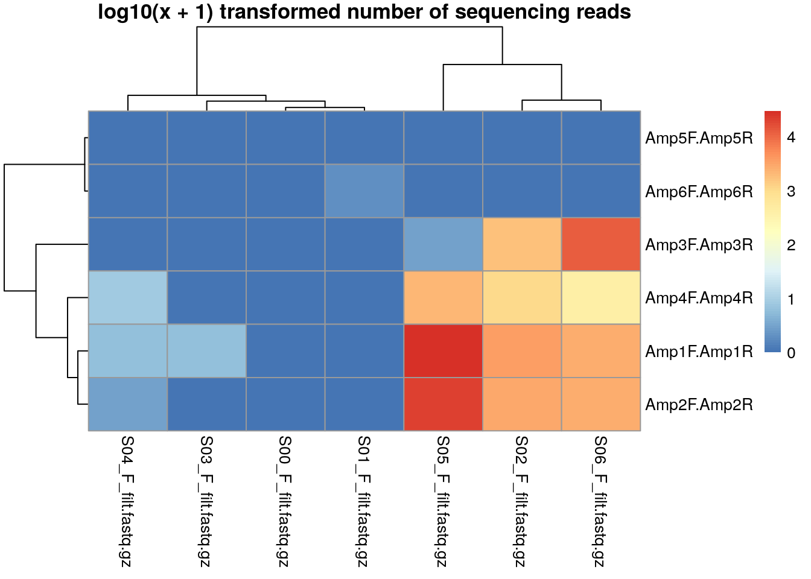

The MultiAmplicon package uses dedicated classes to ensure that input to its sortAmplicons function is provided correctly. Concerning input files, this means for the user that file names (including paths to the directory they are stored in) of forward and reverse sequencing read files must be provided as a PairedReadFileSet. These files can contain reads in fastq or in gzipped fastq format. We focus as a default use case on (non-interleaved) paired-end reads, as these are the most common format Illumina sequencing reads are currently produced in.
Similarly, primer pairs must be provided in a PrimerPairsSet. We then match forward and reverse primers at the start of forward and reverse reads, respectively. The maximal number of mismatches and the maximal distance from the start of the read can be supplied as arguments to the function. The primer sequences are trimmed from the reads and the read-pair is associated with the amplicon defined by the primer-pair.
We first have a look at how PairedReadFileSet and PrimerPairsSet are generated. Please use files containing quality filtered sequencing reads for the steps below. See the dada2 tutorial or our real-world example vignette for how files are trimmed and quality filtered. But we here first use a very small data set included in the MultiAmplicon package.
library(MultiAmplicon)
fastq.dir <- system.file("extdata", "fastq", package = "MultiAmplicon")
fastq.files <- list.files(fastq.dir, full.names=TRUE)
Ffastq.file <- fastq.files[grepl("F_filt", fastq.files)]
Rfastq.file <- fastq.files[grepl("R_filt", fastq.files)]
PRF <- PairedReadFileSet(Ffastq.file, Rfastq.file)
primerF <- c(Amp1F = "AGAGTTTGATCCTGGCTCAG", Amp2F = "ACTCCTACGGGAGGCAGC",
Amp3F = "GAATTGACGGAAGGGCACC", Amp4F = "YGGTGRTGCATGGCCGYT",
Amp5F = "AAAAACCCCGGGGGGTTTTT", Amp6F = "AGAGTTTGATCCTGCCTCAG")
primerR <- c(Amp1R = "CTGCWGCCNCCCGTAGG", Amp2R = "GACTACHVGGGTATCTAATCC",
Amp3R = "AAGGGCATCACAGACCTGTTAT", Amp4R = "TCCTTCTGCAGGTTCACCTAC",
Amp5R = "AAAAACCCCGGGGGGTTTTT", Amp6R = "CCTACGGGTGGCAGATGCAG")
PPS <- PrimerPairsSet(primerF, primerR)
MA <- MultiAmplicon(PPS, PRF)Note that the primer pairs in the PrimerPairsSet can be named and the same also is true for the sequencing read file pairs (although not in our example above). This results in names for primer-pairs and for samples.
Based on the primer sequences we can now sort the sequences into amplicons. This is done by the function sortAmplicons, which updates the MultiAmplicon object with the sorted amplicons.
For this small example data set we can look at the resulting rawCounts i.e. the number of sequences for each of the fully stratified amplicon x sample matrix.
MA1 <- sortAmplicons(MA)knitr::kable(rawCounts(MA1))| S00_F_filt.fastq.gz | S01_F_filt.fastq.gz | S02_F_filt.fastq.gz | S03_F_filt.fastq.gz | S04_F_filt.fastq.gz | S05_F_filt.fastq.gz | S06_F_filt.fastq.gz | |
|---|---|---|---|---|---|---|---|
| Amp1F.Amp1R | 0 | 0 | 3495 | 5 | 5 | 29310 | 2569 |
| Amp2F.Amp2R | 0 | 0 | 2949 | 0 | 2 | 20391 | 2690 |
| Amp3F.Amp3R | 0 | 0 | 1817 | 0 | 0 | 2 | 11671 |
| Amp4F.Amp4R | 0 | 0 | 1087 | 0 | 7 | 2076 | 428 |
| Amp5F.Amp5R | 0 | 0 | 0 | 0 | 0 | 0 | 0 |
| Amp6F.Amp6R | 0 | 1 | 0 | 0 | 0 | 0 | 0 |
Now we can plot the result. The function plotAmpliconNumbers allows us also to store clustering information (see ). Which can afterwards be used to filter data.
clusters <- plotAmpliconNumbers(MA1)
We can use this clustering information now to subset our MultiAmplicon object.
two.clusters.row <- cutree(clusters$tree_row, k=2)
two.clusters.col <- cutree(clusters$tree_col, k=2)
knitr::kable(two.clusters.row)| x | |
|---|---|
| Amp1F.Amp1R | 1 |
| Amp2F.Amp2R | 1 |
| Amp3F.Amp3R | 1 |
| Amp4F.Amp4R | 1 |
| Amp5F.Amp5R | 2 |
| Amp6F.Amp6R | 2 |
knitr::kable(two.clusters.col)| x | |
|---|---|
| S00_F_filt.fastq.gz | 1 |
| S01_F_filt.fastq.gz | 1 |
| S02_F_filt.fastq.gz | 2 |
| S03_F_filt.fastq.gz | 1 |
| S04_F_filt.fastq.gz | 1 |
| S05_F_filt.fastq.gz | 2 |
| S06_F_filt.fastq.gz | 2 |
MA.sub <- MA1[which(two.clusters.row==1), which(two.clusters.col==2)]
knitr::kable(rawCounts(MA.sub))| S02_F_filt.fastq.gz | S05_F_filt.fastq.gz | S06_F_filt.fastq.gz | |
|---|---|---|---|
| Amp1F.Amp1R | 3495 | 29310 | 2569 |
| Amp2F.Amp2R | 2949 | 20391 | 2690 |
| Amp3F.Amp3R | 1817 | 2 | 11671 |
| Amp4F.Amp4R | 1087 | 2076 | 428 |
In real world applications (see our other vignette) the samples to be excluded from further analysis can be selected based on clustering with negative controls (similar to the example data here where S00 is an empty file and S01 contains one sequence).
We first estimate the errors separately for both for dada’s probabilistic sequence variant inference. We do this here on the combined stratified files for different amplicons. This should be done separately for forward ad reverse sequence though!
errF <- learnErrors(unlist(stratifiedFilesF(MA1)), nread=1e6,
verbose=0)
errR <- learnErrors(unlist(stratifiedFilesR(MA1)), nread=1e6,
verbose=0)We can now run the pipeline of the dada2 package in parallel over the different amplicons. We update our object from each previous step and safe it under a new name, here for illustration. In your own workflow you can also overwrite the old object.
MA2 <- derepMulti(MA.sub, mc.cores=1)
MA3 <- dadaMulti(MA2, Ferr=errF, Rerr=errR, pool=FALSE)
#> Sample 1 - 3495 reads in 1493 unique sequences.
#> Sample 2 - 29310 reads in 7224 unique sequences.
#> Sample 3 - 2569 reads in 1053 unique sequences.
#> Sample 1 - 3495 reads in 1535 unique sequences.
#> Sample 2 - 29310 reads in 8273 unique sequences.
#> Sample 3 - 2569 reads in 994 unique sequences.
#> Sample 1 - 2949 reads in 1142 unique sequences.
#> Sample 2 - 20391 reads in 4136 unique sequences.
#> Sample 3 - 2690 reads in 968 unique sequences.
#> Sample 1 - 2949 reads in 1290 unique sequences.
#> Sample 2 - 20391 reads in 5719 unique sequences.
#> Sample 3 - 2690 reads in 1100 unique sequences.
#> Sample 1 - 1817 reads in 589 unique sequences.
#> Sample 2 - 2 reads in 2 unique sequences.
#> Sample 3 - 11671 reads in 3783 unique sequences.
#> Sample 1 - 1817 reads in 547 unique sequences.
#> Sample 2 - 2 reads in 2 unique sequences.
#> Sample 3 - 11671 reads in 4054 unique sequences.
#> Sample 1 - 1087 reads in 394 unique sequences.
#> Sample 2 - 2076 reads in 959 unique sequences.
#> Sample 3 - 428 reads in 166 unique sequences.
#> Sample 1 - 1087 reads in 433 unique sequences.
#> Sample 2 - 2076 reads in 962 unique sequences.
#> Sample 3 - 428 reads in 183 unique sequences.
MA4 <- mergeMulti(MA3)
MA5 <- sequenceTableMulti(MA4)
MA6 <- noChimeMulti(MA5, mc.cores=1)Ready! This was easy, right?
The above workflow assumes that errors could be estimated for each amplicon together. This would be beneficial if errors were largely similar between different amplicons (i.e. not influenced by the primer starting the sequence). Below an alternative approach is demonstrated with error probabilities estimated separately for each amplicon (here also overwrite objects from each previous processing steps).
MA.alt <- dadaMulti(MA2, selfConsist=TRUE, pool=FALSE)
#> Initializing error rates to maximum possible estimate.
#> Sample 1 - 3495 reads in 1493 unique sequences.
#> Sample 2 - 29310 reads in 7224 unique sequences.
#> Sample 3 - 2569 reads in 1053 unique sequences.
#> selfConsist step 2
#> selfConsist step 3
#> selfConsist step 4
#> selfConsist step 5
#> selfConsist step 6
#> Convergence after 6 rounds.
#> Initializing error rates to maximum possible estimate.
#> Sample 1 - 3495 reads in 1535 unique sequences.
#> Sample 2 - 29310 reads in 8273 unique sequences.
#> Sample 3 - 2569 reads in 994 unique sequences.
#> selfConsist step 2
#> selfConsist step 3
#> selfConsist step 4
#> selfConsist step 5
#> Convergence after 5 rounds.
#> Initializing error rates to maximum possible estimate.
#> Sample 1 - 2949 reads in 1142 unique sequences.
#> Sample 2 - 20391 reads in 4136 unique sequences.
#> Sample 3 - 2690 reads in 968 unique sequences.
#> selfConsist step 2
#> selfConsist step 3
#> selfConsist step 4
#> Convergence after 4 rounds.
#> Initializing error rates to maximum possible estimate.
#> Sample 1 - 2949 reads in 1290 unique sequences.
#> Sample 2 - 20391 reads in 5719 unique sequences.
#> Sample 3 - 2690 reads in 1100 unique sequences.
#> selfConsist step 2
#> selfConsist step 3
#> selfConsist step 4
#> selfConsist step 5
#> Convergence after 5 rounds.
#> Initializing error rates to maximum possible estimate.
#> Sample 1 - 1817 reads in 589 unique sequences.
#> Sample 2 - 2 reads in 2 unique sequences.
#> Sample 3 - 11671 reads in 3783 unique sequences.
#> selfConsist step 2
#> selfConsist step 3
#> selfConsist step 4
#> Convergence after 4 rounds.
#> Initializing error rates to maximum possible estimate.
#> Sample 1 - 1817 reads in 547 unique sequences.
#> Sample 2 - 2 reads in 2 unique sequences.
#> Sample 3 - 11671 reads in 4054 unique sequences.
#> selfConsist step 2
#> selfConsist step 3
#> selfConsist step 4
#> Convergence after 4 rounds.
#> Initializing error rates to maximum possible estimate.
#> Sample 1 - 1087 reads in 394 unique sequences.
#> Sample 2 - 2076 reads in 959 unique sequences.
#> Sample 3 - 428 reads in 166 unique sequences.
#> selfConsist step 2
#> selfConsist step 3
#> selfConsist step 4
#> Convergence after 4 rounds.
#> Initializing error rates to maximum possible estimate.
#> Sample 1 - 1087 reads in 433 unique sequences.
#> Sample 2 - 2076 reads in 962 unique sequences.
#> Sample 3 - 428 reads in 183 unique sequences.
#> selfConsist step 2
#> selfConsist step 3
#> selfConsist step 4
#> Convergence after 4 rounds.
MA.alt <- mergeMulti(MA.alt)
MA.alt <- sequenceTableMulti(MA.alt)
MA.alt <- noChimeMulti(MA.alt, mc.cores=1)I will add a comparison between the two different versions here.
In some real world applications it might be desirable to have more control over parameters used in the pipeline for different amplicons.
We use ellipsis (aka “…”, dots, dot-dot-dot or three-dots) to pass parameters on to the underlying dada2 functions. The MultiAmplicon package allows all those arguments to be vectors with values varying for different amplicons.
Let’s suppose for this we e.g. want to merge a subset of our amplicons, while we concatenate others using N’s.
MA.mixed <- mergeMulti(MA3, justConcatenate=c(TRUE, FALSE, FALSE, TRUE))
#> merging sequences from 3 samples for amplicon Amp1F.Amp1R
#> calling mergePairs with justConcatenate=TRUE parameters
#> DONE
#>
#> merging sequences from 3 samples for amplicon Amp2F.Amp2R
#> calling mergePairs with justConcatenate=FALSE parameters
#> DONE
#>
#> merging sequences from 3 samples for amplicon Amp3F.Amp3R
#> calling mergePairs with justConcatenate=FALSE parameters
#> DONE
#>
#> merging sequences from 3 samples for amplicon Amp4F.Amp4R
#> calling mergePairs with justConcatenate=TRUE parameters
#> DONEThe above example would make sense if amplicons Amp1F.Amp1R and Amp4F.Amp4R (1st and 4th in our object) had too little overlap between forward and reverse reads to be merged and would better be concatenated.